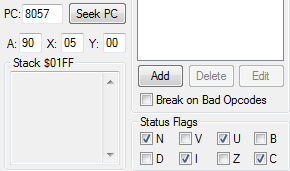

Содержание
Мелкие детали можно прочитать на NesDev.
Центральным процессором (CPU - Central Processing Unit) для NES является 8-битный микропроцессор на основе MOS Technology 6502. Версия процессора RP2A03 для региона NTSC и RP2A07 для региона PAL.
За 1 кадр процессор успевает выполнить инструкций на сумму 29780/33247 тактов для NTSC/PAL (с небольшой погрешностью для обоих регионов).
Размер шины данных = 8 бит. Это означает, что за 1 раз процессор может обработать данные размером 1 байт. Отсюда и "8-bit" в названии игровой консоли.
Размер адресной шины = 16 бит. Она позволяет процессору обращаться к любому адресу своей памяти из диапазона $0000-$FFFF. Для обращения к памяти существует несколько различных способов.
Подробнее про эти способы читай в подразделе с режимами адресации.
Выбери раздел из списка для прочтения информации по нему.
Раздел еще в разработке, ссылки будут добавлены постепенно.
| Регистры процессора | Память процессора | Язык программирования | Reset |
Регистр - ячейка сверхбыстрой оперативной памяти процессора, У процессора есть пять 8-битных и один 16-битный регистр. Их текущие значения можно посмотреть/изменить в Debugger'е.

Несмотря на ограниченное количество основных регистров (A, X и Y), с их помощью можно написать практически любой код.
8-битный регистр A (Аккумулятор). Является наиболее часто используемым регистром по сравнению с регистрами X и Y. Служит для хранения и передачи байта, а также для арифметических и битовых операций с этим байтом.
8-битный индексный регистр X. В основном используются для получения доступа к диапазону адресов посредством индексной адресации, где значение индексного регистра добавляется к операнду инструкции для вычисления адреса. Может служить просто для хранения и передачи байта.
8-битный индексный регистр Y. В основном используются для получения доступа к диапазону адресов посредством индексной адресации. Может служить просто для хранения и передачи байта.
Возможности регистра Y ограничены по сравнению с X. Y применяется в тех случаях, когда в подпрограмме оба регистра используются одновременно, и теоретически X можно использовать с любыми другими инструкциями.
Например, только регистр X может быть использован в инструкциях
8-битный регистр указателя стека. Указатель является 16-битным адресом, но старший байт этого адреса всегда = #$01, поэтому адреса стека находятся в диапазоне $0100-$01FF.
Немного больше подробностей про стек читай в подразделе с памятью процессора.
Указатель стека служит для хранения адреса, в который будет помещен следующий байт при использовании стека. Адрес указателя изменяется при выполнении инструкций, работающих со стеком.
16-битный регистр, в котором находится адрес памяти процессора. Он служит для хранения адреса текущей выполняемой инструкции.
8-битный регистр статуса процессора, каждый бит отображает состояние одного флага.
Подробнее про флаги читай в подразделе с регистром статуса процессора.
Размер памяти процессора = 64 KB, это диапазон адресов $0000-$FFFF. В каждом адресе хранится 1 байт.
Память поделена на несколько участков. Диапазон $4018-$4FFF не используется.
Оперативная память = 2 KB в диапазоне $0000-$07FF. В ней хранятся динамические данные для работы кода. 3 зеркала RAM находятся в диапазоне $0800-$1FFF.
RAM поделена на 8 страниц, каждая страница размером 256 байтов, отсчет начинается с 0. Это диапазоны $0?00-$0?FF, например $0400-$04FF - 4-я страница. Страница $0000-$00FF называется нулевая (Zero Page).
Адреса стека в диапазоне $0100-$01FF. Стек в основном служит для хранения адресов возврата из подпрограмм и прерываний процессора, например при выполнении инструкуции
В стеке можно временно сохранять некоторые данные (инструкции
Подробнее про работу стека читай в разделе и инструкциями процессора. Еще можно посмотреть в Википедии.
Адреса стека могут быть использованы просто как любые другие адреса RAM для хранения динамических данных.
Размер данных для спрайтов = 256 байтов, обычно в диапазоне $0200-$02FF. Эти данные будут ежекадрово скопированы в память спрайтов (OAM Memory), что позволит спрайтам отображаться на экране и изменять их положение относительно фона.
Подробнее про спрайты узнаешь в разделе с графикой на главной странице сайта.
В отличие от личных регистров процессора, эти регистры находятся в NES Memory и имеют какой-то реальный адрес. Через регистры передаются параметры для управления устройством.
Подробнее про эти регистры узнаешь в соответствующих разделах на главной странице сайта.
$2000-$2007 - регистры видеопроцессора. Зеркала регистров $2008-$3FFF.
К регистрам видеопроцессора также относится адрес $4014.
Диапазон $4000-$4013 и адрес $4015 - регистры аудиопроцессора.
Порты ввода/вывода по адресам $4016-$4017. Служат для чтения управления с джойстиков.
Некоторые адреса из диапазона $5000-$5FFF могут быть использованы как дополнительные регистры с различным предназначением на некоторых мапперах.
Подробнее про мапперы узнаешь в соответствующих разделах на главной странице сайта.
$6000-$7FFF - адреса батарейки (Save RAM), предназначенной для сохранения данных игрового процесса на микросхеме картриджа. Обычно используется в RPG-играх. Адреса могут быть использованы как дополнительная RAM для хранения динамических данных и/или как PRG для хранения кода и статических данных.
Наличие SRAM зависит от маппера. В некоторых случаях вместо SRAM может быть PRG RAM.
Диапазон адресов $8000-$FFFF. Здесь находится код игры и статические данные. По этим адресам отображается та область памяти из ROM File, которую процессор "видит" в своей памяти на данный момент и с которой может работать.
Некоторые мапперы позволяют переключать участки памяти размером от 8 до 32 KB, которые называются "банки". После переключения банка процессор видит в своей памяти уже другую область из ROM File, может выполнять оттуда код и считывать эти данные.
Некоторые из адресов диапазона $8000-$FFFF используются как регистры для управления переключением банков памяти.
Вектор - адрес, в котором начинается код обработчика соответствующего прерывания процессора. При срабатывании прерывания процессор переходит на адрес его обработчика и начинает выполнять код в этом месте.
По этим адресам находятся младший и старший байты адреса вектора.
| Прерывание | Младший байт | Старший байт | Приоритет прерывания |
| NMI | $FFFA | $FFFB | Средний |
| Reset | $FFFC | $FFFD | Высокий |
| IRQ/BRK | $FFFE | $FFFF | Низкий |
Подробнее про NMI и IRQ прочитаешь в разделах с видеопроцессором. BRK будет описан в инструкциях процессора.